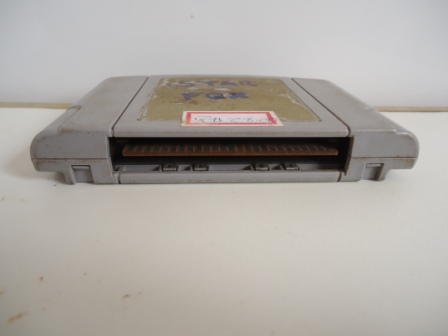

Nintendo 64 - Como restaurar um cartucho
 :::. Por Gigacom-
O tempo é cruel com os video games. E os ex-donos
desleixados tambem... não raro esbarramos por aí com
cartuchos e consoles excelentes porém barbaramente judiados.
Abaixo algumas dicas de como trazer nova vida à um cartuchinho
de N64.
:::. Por Gigacom-
O tempo é cruel com os video games. E os ex-donos
desleixados tambem... não raro esbarramos por aí com
cartuchos e consoles excelentes porém barbaramente judiados.
Abaixo algumas dicas de como trazer nova vida à um cartuchinho
de N64.
_________________________________________________________________________________
De vez em quando encontro algumas coisas muito boas por aí, mas em estado deploravel. Esse é o caso dessa Star Fox 64. Ganhei praticamente de brinde, o cartucho estava entulhado na banca de uma feira, e pelo estado em que estava ninguem em quase 4 anos quis comprar o cartucho. Como no dia em que consegui ele eu comprei uma penca de outros cartuchinhos, a Star Fox levei por um preço precinho bem bacana o que compensou no final. E assim ela chegou em casa:

Feinha e suja... quase sempre os joguinhos chegam em casa assim
As duas labels dessa Star Fox 64 estavam detonadas. O cartucho estava sujo, porém sem trincados ou arranhões profundos o que é muito bom. Com essa situação geral, o primeiro passo foi desmontar o cartucho. A técnica de desmonte é a mesma utilizada nos de Super Nintendo (clique aqui para ver).
Porém com o detalhe de que os cartuchos de N64 possuem algumas peças a mais em seu interior, que são duas chapinhas de metal e uma peça de plástico. A peça de plástico é meio frágil, o que demanda um pouco de cuidado, as chapinhas de metal... bem, a minha sugestão é que a manuseie com uma luva, pois essas chapas oxidam com muita facilidade ainda mais quando entra em contato com o oléo das mãos. Se não der pra usar uma luva, você pode passar um pano limpo e seco na superficie dessas chapas para tirar todo resquicio de óleo que possa ter ficado ali antes de remontar (isso já evitará com toda certeza uma oxidação, ou ao menos a diminuirá bastante).
Com tudo desmontado, chega a hora da limpeza. Essa é um bom momento para limpar os contatos da plaquinha do cartucho. Um pano umedecido em álcool ou mesmo em água, consegue tirar com facilidade qualquer poeira ou sujeira que possa provocar um mal funcionamento.
As partes plasticas vão para uma tigelinha com água e sabão. Uma escovinha é a melhor ferramenta para tirar a sujeira do plastico, mas as vezes há alguns arranhões profundos e que acumulam sujeira. Essa sujeira de arranhões infelizmente não saem com a escovinha, mas há outro método de tirar a sujeira dali (leia mais aqui).

Como nesse caso não há label alguma no plastico, a ideia é tirar o excesso da label original para que se possa colar outra no lugar. Esfregando com a escova e um pouco de água, a cola e o resto de papel sai com facilidade. Mas as vezes a cola fica seca e bem grudada no lugar, porém o importante é retirar apenas o excesso (outra label vai ser colada em cima de qualquer forma).
Resultado da limpeza. Veja como ficou bem limpinho
Com tudo limpo e remontado, vamos às medidas. No caso dos cartuchos do N64, é possivel pegar as medidas com facilidade, sendo que de inicio vamos precisar apenas das medidas de altura e largura da label.


Assim, temos:
Frente: 5,5cm x 6,5 cm
Trás: 8cm x 3,9
Essas medidas são a do espaço onde a label fica, mas não da label em si. Normalmente a label é menos de 1mm menor em cada lado, assim ela se encaixa perfeitamente no local sem ficar sobrando ou faltando demais. Agora, vem a parte dificil.
Fazer labels de cartuchos é uma arte. E um sacrificio tambem... é um saco achar imagens boas para alguns jogos, ainda mais da label original! Quando damos a sorte de encontrar material de uma boa alma caridosa, que escaneou, tirou fotos, tratou as imagens, separou e publicou em algum site, tudo fica muito facil. Porém quando se pesquisa por aí e tudo que se acha são fotos de anuncios de cartuchos ainda piores que o seu, a coisa complica.
Particularmente eu não sou exigente (não muito) com a originalidade de uma label. Se ela é bem feita e me agrada, não há problema. No caso dos cartuchos da Nintendo, a label recebe alguns simbolos padrões como o selo de qualidade da Nintendo, alguma coisa para indicar a que tipo de publico o jogo se destina, um ou outro logotipo da empresa que produziu o jogo... enfim, esse tipo de coisa, que pode ser aproveita de imagens com boa qualidade para inserir na label que iremos fazer.
Um outro detalhe é escolher um bom programa editor de imagens. Existem milhares por aí, desde o ultra supra sumo Photoshop, assim como a copia barata made in casa dele que é o Gimp (que não é ruim, só que não tem os 1001 recursos que o Photoshop possui). Eu uso muito o Paint para esse tipo de coisa, por simplesmente ele ser... simples. Dá pra ampliar a imagem, cortar, colar, dá uma esticada... salvar... basicão mesmo. Mas um Gimp da vida pode fazer milagres. Tenho alguns amigos que fazem verdadeiras perólas com ele, mas, meu objetivo aqui não é ensinar como mecher nesses programas (sinto muito, mas você terá que aprender isso por aí hehehe), mas como orientar a fazer a label em si para que você não tenha que imprimir mil vezes uma mesma imagem até acertar tudo.
Acesse o Trombone e comente sobre essa matéria!


Aqui, vou apresentar a restauração de um controle de SNES que comprei em péssimo estado numa feirinha da minha cidade, e que agora está lindinho funcionando perfeitamente. Confira as dicas, e faça uma restauração você também
Restaurando um controle de PSX
Peguei o mais feinho e judiado dos controles para fazer esse artigo. O coitado estava encardido na parte de cima, e debaixo dele encontrei arranhões nas partes de apoio da mão, e bastante sujeira acumulada nas inscrições. O conector do cabo estava muito arranhado e sujo tambem, o cabo então nem se fala... sujava a mão só de pegar